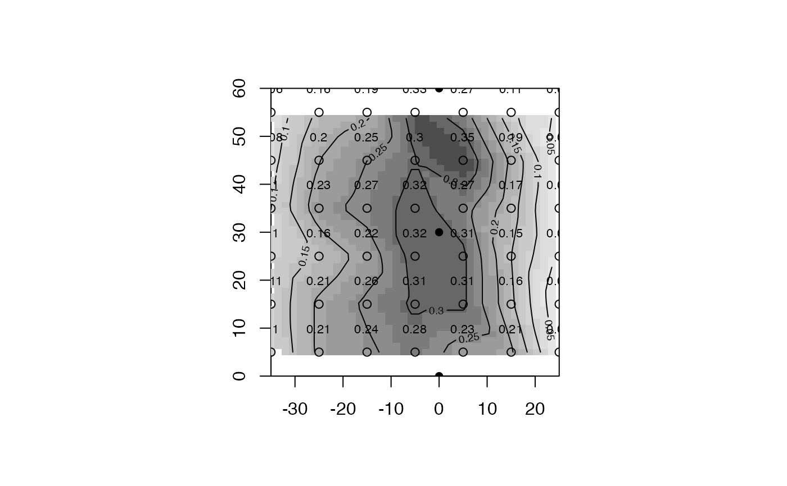

catchcan.RdThree catch can data sets, one each for lateral, hose pull, and solid set sprinkler systems.
data("catchcan")
A named list of 3 catch can data sets; lateral, traveler, and solid.set
catchcan$lateral6x7 matrix of catch can data, units are in./hr. Grid spacing of 10 ft x 10 ft
lna numeric vector of catch can data - nth can to left of lateral
rna numeric vector of catch can data - nth can to right of lateral
catachcan$traveler16X2 matrix of catch can data. Effective (lane) spacing is 224 ft in example.
stationdistance (ft) of catch can relative to hose (0), neg. is left of hose in plan view
depthcollected depth, in.
catchcan$solid.set4x4 matrix of catch can data, units are in. Can grid spacing of 20 ft x 20 ft inside of 4 operating sprinklers on 80x80 ft sprinkler x lateral spacing.
(lateral)Form II-1, item 10, p.29. Utah State University, Logan, Utah. https://pdf.usaid.gov/pdf_docs/PNAAG745.pdf
(traveler)Table 1, pg. 8. Evans, R.O., Barker J.C., Smith J.T., Sheffield R.E. 1997b. Field calibration procedures for animal wastewater application equipment, hard hose and cable tow traveler irrigation system. NC Cooperative Extension Service publication AG-553-2. Raleigh, NC.
(solid set)Work Sheet 1. p. 13. Evans, R.O., Barker J.C., Smith J.T., Sheffield R.E. 1997a. Field calibration procedures for animal wastewater application equipment, stationary sprinkler irrigation system. NC Cooperative Extension Service publication AG 553-1. Raleigh, NC.
Mirriam and Keller, 1978. Farm System Irrigation Evaluation: A Guide for Management. Form II-1, item 10, p.29. Utah State University, Logan, Utah. https://pdf.usaid.gov/pdf_docs/PNAAG745.pdf
Evans, R.O., Barker J.C., Smith J.T., Sheffield R.E. 1997b. Field calibration procedures for animal wastewater application equipment, hard hose and cable tow traveler irrigation system. NC Cooperative Extension Service publication AG-553-2. Raleigh, NC. https://content.ces.ncsu.edu/hard-hose-and-cable-tow-traveler-irrigation-systems
Evans, R.O., Barker J.C., Smith J.T., Sheffield R.E. 1997a. Field calibration procedures for animal wastewater application equipment, stationary sprinkler irrigation system. NC Cooperative Extension Service publication AG 553-1. Raleigh, NC. https://irrigation.wordpress.ncsu.edu/files/2017/01/ag-553-1-stationary-sprinkler.pdf
#> Warning: package ‘fields’ was built under R version 4.0.2#>#> Warning: package ‘spam’ was built under R version 4.0.2#>#> Warning: package ‘dotCall64’ was built under R version 4.0.2#>#> #> #> #> #>#> #>#> #> #>#> #>data(catchcan) use.data<-catchcan$lateral #matrix can be viewed as plan view of catch data #x,y matrix 10 ft x 10 ft catch can spacing x<-seq(-35,25,10) # x=0 is lateral position y<-seq(5,55,10) grd<-list(x,y) # prepare list for make.surface function [fields] grid<-make.surface.grid(grd) plot(grid)labels<-matrix(t(use.data),ncol=1)#transpose matrix and stack rows into 1 column text(grid[ ,1],grid[ ,2]+2,labels,cex=0.8) # plot catch data at collection point## or plot using function plotss. Shows test data from 1 lateral with no overlap. cdata<-cbind(grid[ ,1],grid[ ,2],labels) #construct required catch can data matrix sp.x<-rep(0,3);sp.y<-seq(0,60,30)# sprinkler spacing (y) = 30 ft sploc<-cbind(sp.x,sp.y) #construct required sprinkler location matrix plotss(cdata,sploc)